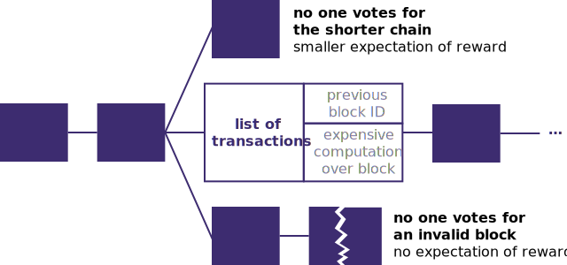

Linked Data, blockchain, and other epic sagas
Ruben Verborgh
Ghent University – imec
And for this part of the project, we’ll use blockchain.
That doesn’t make sense at all.
Yeah, we know. But that’s how we get it funded.
Linked Data, blockchain, and other epic sagas
Linked Data, blockchain, and other epic sagas
The Web was invented in a time when
decentralization was a given.
-
Decentralized systems were the assumption:
-
The problem at the time was universality:
- accessing and traversing documents across systems
The Web’s technology stack
is almost entirely decentralized.
- Anyone is free to set up a Web server.
- No central partly controls who accesses what.
- Any page can link to any other page.
The Web is a scale-free network with
few large nodes and many small ones.
Unfortunately, the Web does have
some single points of failure.
- government-based DNS hijacks
- denial-of-service attacks on servers
- …
Linked Data, blockchain, and other epic sagas
Linked Data is a decentralized way
of publishing data on the Web.
-
Anyone can say anything about anything.
-
Like the Web, Linked Data is scale-free.
- few large datasets, many small ones
-
Choose the vocabulary you want.
- Choosing popular ones improves interoperability.
- Ensure you link to other data.
Linked Data’s basic building block
is a link between 2 resources.
Linked Data was meant to break through
the Semantic Web’s chicken–egg problem.
-
Raw data now!
-
There’s lots of raw data now…
but many issues remain:
- data quality
- queryable access to data
- cross-dataset queries
- …
-
Who’ll pay to fix these?
Who’ll pay to access decentralized data,
to whom, and how?
-
The true value of Linked Data is unlocked
when combining data from multiple sources.
- So shall we centralize it to make money?
-
Especially with open data, the question is tricky.
- We expect open data to be free.
- Should open data providers also pay for our queries?
Linked Data, blockchain, and other epic sagas
The balance between centralization and
decentralization needs to be revised.

Every piece of data in decentralized apps
could come from a different place.

Multiple decentralized Web apps
share access to your personal data pod.

Different app and storage providers
compete independently.

Linked Data, blockchain, and other epic sagas
Before we start,
let’s agree on terminology.
Getting a bit ahead of ourselves, but we’ll discuss:
- ledger
- an ordered list of events
- distributed ledger
- a shared, replicated ledger
- blockchain
- a specific type of distributed ledger
- Bitcoin
- a specific type of blockchain
Also, here’s a brief reminder
of public-key cryptography.
-
A party generates a public/private key pair.
- The private key cannot be recovered from the public key.
-
They distribute the public key.
-
They can sign messages with their private key.
- Authenticity can be validated using the public key.
Linked Data, blockchain, and other epic sagas
It all starts with a decentralized network
of various nodes.
The nodes in the network
don’t necessarily know or trust each other.
The nodes want to send
trusted messages to each other.
no blockchain needed
The sender signs the message
with its private key.
The recipient verifies the signature
using the sender’s public key.
Now the recipient aims to prove that
the sender sent this specific message.
still no blockchain needed
Since the message has been signed,
we know no one else sent or modified it.
Now assume nodes own some resources,
like a certain amount of money.
How can they irrevocably transfer
such resources to other nodes?
no blockchain needed… yet
Sign the transfer with a private key,
which undeniably confirms its existence.

However, what prevents the node
from double-spending its resources?
How can we prevent such disagreements
in general within decentralized networks?
blockchain at last
Linked Data, blockchain, and other epic sagas
Blockchain addresses agreements
through decentralized consensus.
-
A distributed ledger is maintained by
splitting it into blocks of transactions.
-
The nodes in the network vote
on the acceptance of blocks.
-
Voting for blocks with incorrect transactions
is less rewarding than voting for valid blocks.
-
The longest blockchain represents the truth,
because most voting power has been invested in it.
In Bitcoin, nodes cast votes
by spending computational power.
Since computational power is expensive,
nodes cast their vote wisely.

This leads to a distributed ledger
with consensus over transactions.
-
Nodes receive a reward for
computing the next valid block (“mining”).
- incentive to create valid blocks
- incentive to build on a valid chain
- incentive to build on the longest chain
-
If more than 50% of CPU power is with honest nodes,
voting fairly maximizes the expected reward.
-
Other ledger types use different proof-of-work.
Linked Data, blockchain, and other epic sagas
A blockchain is useful to
establish binding agreements between
parties that cannot trust each other,
without a centralized mediator.
We don’t need a blockchain
when there is no disagreement.
©2010 Andrew West
We don’t need a blockchain
for unique physical goods.
source unknown
We don’t need a blockchain
when parties trust each other.
©2018 mammovies
We don’t need a blockchain
when parties trust a central mediator.
©2018 Paul Racko
Linked Data, blockchain, and other epic sagas
Bitcoin provides a decentralized currency
with secure money transfers.
-
Transfer money without a central authority.
-
Strong technological proof, but questions remain.
- lack of regulation
- criminal usage
-
Energy consumption has reached dangerous heights.
- consider different proof-of-work
Ethereum provides distributed computing
based on blockchain technology.
-
“Smart contracts” are coded on the blockchain.
-
Fees are only transferred upon successful completion.
-
Custom applications can run on Ethereum.
- decentralized microblogging
- secure purchase of virtual goods
- digital rights management
- …
The InterPlanetary File System provides
an immutable, fully decentralized Web.
-
Use blockchain to store data permanently.
-
No single point of failure.
-
Content does not change.
Filecoin provides a virtual market
for secure storage space.
-
rental of trusted storage space
- Many servers have unused storage.
-
marketplace for storage
- Servers compete to store your file the cheapest.
-
marketplace for retrieval
- Servers compete to return your file the cheapest.
How can Linked Data
help distributed ledgers?
How can distributed ledgers
help Linked Data?
-
Linked Data can be archived
in a sustainable way on blockchains.
-
Blockchain can help to achieve trust
about Linked Data facts.
-
Blockchain can drive a Linked Data market,
and create incentives to invest in dataset quality.
Current apps do centralized computations
on centralized hardware clusters.

Blockchain can provide incentives and
trust for decentralized computations.

Linked Data, blockchain, and other epic sagas
Interoperability & collaboration can make
the decentralized Web of Data a reality.
-
Decentralization ensures that
we can publish what we want.
-
Linked Data provides interoperability
between decentralized data sources.
-
Blockchain creates incentives for collaborations
that improve the Linked Data experience for all.